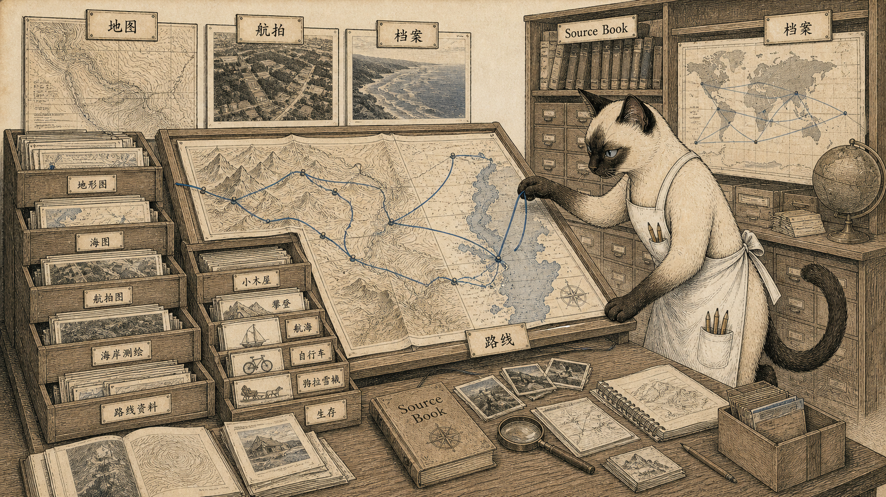

模块 01
移动者的资料入口
真正的旅行者不是只买票的人，而是会找图、读图、查档案的人。
先看图：地图柜、航拍照片、海岸测量档案和《探险者有限公司资料书》被连成一间资料室。本章后面许多项目，都是从这个总入口继续展开。
有趣的是：美国海岸与大地测量局自 1835 年以来积累两万多份测量，公众可以取得地图、照片和资料。移动先是一种资料能力。
为什么重要：这本资料书分二十六类，从地图、攀岩、航行、犬队运输到自行车旅行和急救医疗。它把“上路”变成可检索的知识系统。